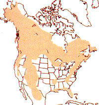

I was slipping quietly through the white heart of a parklike grove of quaking aspen when a roundish bundle of chocolate fur emerged from a thicket of Gambel oak a few yards to my left and came waddling my way. The creature appeared to be neither canine, feline, nor bovine, and though it was about the size of a large badger, the shape and coloration were wrong.
What it was, I soon saw, was a bear cub, its chubby body swaying from side to side like a ship in heavy seas as it bobbed along atop stubby, bowed legs.
Then, just a few seconds in the wake of the first, a second cub burst from the brush . . . and a third. And all three of the little rascals were headed right for me, with the intrepid leader now just a few feet away.
I was thrilled-though somewhat distracted by a most pressing curiosity: Where is Momma bear, and how big is she?
The matron didn't keep me waiting long, making her entrance a few moments later from behind a curtain of aspen saplings a score or so yards uphill and, fortunately, upwind. Hump-shouldered and autumn fat, the mother bear was by far the most beautiful specimen of Ursus americanus I'd ever seen, more closely resembling a small grizzly than your typical, postcard-variety black bear. Most significantly, she wasn't black. Her head, legs, and ample rump were patched with the same chocolate brown that completely clothed the cubs, but her back was a broad swath of straw blond that took on a mottled appearance as she moved through the scattered shafts of golden sunlight fingering down through the aspens.
As the sow browsed slowly toward where I stood like a grinning pillar amidst her trio of hyperactive ursine infants, it occurred to me that my situation-sandwiched between an approaching mother bear and her cubswas something less than enviable. Perhaps, I reckoned, this would be as good a time as any to mentally course through what I knew of black bear biology and behavior.
This female's brown-and-blond coloration, while giving the lie to the name black bear, really wasn't all that unusual for a Rocky Mountain bruin. In the hardwood forests of eastern North America, almost all black bears are, in fact, black (often with a blaze of white on chest or throat). But in the Rocky Mountain West, a pure licorice black bear is the exception rather than the rule, with chocolate, cinnamon, and vanilla being the more common flavors. (And somewhere up in the primeval forests of coastal British Columbia roams the ghostlike Kermode's bear, a snow white, blue-eyed black bear variation.)
Another regional difference in this interesting race of bruins is that eastern black bears tend to be larger than their western cousins. While Rocky Mountain males rarely exceed 100 pounds, 600-pound boars occasionally turn up in some northeastern states. (The largest black bear on record, killed in Wisconsin in the late 1800s, crushed the scales at just over 800 pounds-a respectable weight even for a mature male grizzly.) Female black bears average a petite 150 to 230 pounds in the Rockies, while ranging up to as much as 350 pounds in some eastern states. The Colorado female squinting my way at the moment looked to be toward the top end of the western weight scale, obviously far exceeding my comparatively puny 160 pounds.
But coloration and weight aside, the most pertinent biological question to ponder, given my circumstances, seemed to be . . . what do black bears eat?
Wildlife biologists say that Ursus american us is omnivorous-meaning the species consumes both meat and greens. But "opportunist" might better describe the creature's culinary habits, since a hungry black bear will eat damn near anything. (Including, in rare but documented instances, people.)
In the vegetable department, black bears are partial to berries, forbs, grasses, mast, sedges, herbaceous plants, and the cambium of softbarked trees. In matters of the flesh, they dig gophers, marmots, ground squirrels, voles, Mice, and grubs, and-when they're very hungry and very luckyoccasionally take deer and small livestock such as pigs, goats, and sheep. Additionally, the rotting carcasses of winter-killed animalscarrion-can play an important nutritional role during early spring when bears are just emerging, quite literally starved, from their winter dens and the spring green-up isn't yet in full swing. Wild honey, of course, is the dessert of choice, with discarded human foodgarbage-running a close second.
Surely, I figured, with such a wide variety of chow to choose from, no self-respecting ursine mother-of-three would be interested in gnawing on a leathery old critter like me.
Chomp chomp said Momma bear just then, popping her steel-trap jaws as if to say she knew I was there and sensed my uneasinessas if to let me know that she could hear the bassdrum pounding of my heart and it ticked her off.
I tried to convince myself there was little to worry about, for black bears almost never pose a serious threat to humans . . . so long as the bruins are treated with the respect due unto large, fast, well-armed, heavily muscled, unpredictable, predatory beasts. In fact, wild bears-nonpark animals-are among the most reclusive of all large mammals, want only to be left alone, and generally will hightail it out of the neighborhood at the first hint of human presence.
And yet, I could hardly deny the fact that there have been several dozen people mauled by black bears in North America since the turn of the century-with a score of those maulings resulting in the death of the victims. And some of those attacks were determined (by the most grisly evidence imaginable) to have been predaceous.
A chill breeze and the treetop rattle of sere leaves reminded me that another summer was history. Perhaps, I reflected, that accounted for why these bears were out and about instead of napping on this fine autumn afternoon: They were embarked on a last-minute fattening spree in anticipation of the approaching denning season. Visualizing the cold and snow that freeze-frames this high country in winter, I wondered where my four bears would hole up during the coming cold months.
In the southeastern U.S., black bears often den high above ground in the rot-hollowed trunks of large, standing hardwood snags. Out here in the Rockies, the bruins are more likely to keep to the ground, seeking out natural caves and the bowl-shaped depressions created when trees fall and are uprooted. Throughout their North American range, however, the well-insulated creatures will sometimes simply plop down on a hospitable-looking patch of ground and wait for Mother Nature to cover them with a blanket of snow. Rarely will black bears actually excavate dens; such an exhausting expenditure of energy would consume too many of the fat-stored calories needed to see them through their long winter's slumber.
Judging from their cherubic appearance, the three playful cubs whose excitingly and exceedingly proximate company I was still enjoying had been born in the previous winter's den. Like all black bear progeny, they would have begun life at little more than eight nearnaked ounces each, and would be allowed to enjoy just one more winter's nap snuggled hard against their mother's warmth before being abandoned to earn their own livings in the world.
With this litter of cubs grown and gone, Momma bear would be free once again to accept the affections of a concupiscent male (or several, bears being joyously promiscuous creatures) during the ursine courting months of June and July. Then, the January or February following a successful mating, the sow would give birth to another biennial litter of from one to four cubs. (But only if she had enjoyed a bountiful autumn that allowed her to put on sufficient fat to insure the production of enough milk for the babes' survival; otherwise, her pregnancy would selfterminate.)
One of the first lessons Momma bear would teach a fresh litter of cubs after quitting the nursery den in April or May is the high art of arboreal acrobatics: tree climbing. Very young cubs are defenseless when away from their mothers, and-as evidenced by the trio that was frolicking carelessly at my heelsare filled with youthful temerity. Consequently, infant bears might easily fall prey to predators were it not for their ability to climb.
Perhaps, I reasoned, I should consider a similar line of defense.
Moving only eyeballs, I surreptitiously shifted my gaze from the feeding sow to the trees nearest me, sizing them up for climbability . . . and was distressed to notice the obvious: None had limbs (those enticing projections that desperate folk are wont to go out on) low enough to grasp. Further, fully a quarter of the aspens wore on their smooth, powder white skins the rough, dark scars of wounds inflicted by the short, heavy claws of climbing bears.
No surprise there, and no help either. I knew full well that U. americanus was a better tree climber than your average H. sap. Still, I counseled myself, if Momma bearwho was now a mere dozen or so yards off my port bowshould discover me quaking like an aspen in the midst of her cubs and take umbrage, wouldn't I be better off treed like a coon than standing frozen in my tracks like a lamb at the slaughterhouse gate? Also, I reasoned, the toothsome blonde just might accept my flight up a tree as a sign that I meant her cubs no harm.
A violent self-defense was out of the question. For one thing, I like bears, whether they care for my company or not. (There are far too many humans in this world these days, not nearly enough bears, and damned if I'm going to add to the problem.) But on a more pragmatic level, the big hunting knife I religiously lug along on my solo treks into the backcountry as a talisman against various imagined emergencies was out of immediate reach, buried deep in the bowels of the daypack appended to my tensed shoulders. Just as well, too, since I didn't feel much like playing the role of a modern-day Hugh Glassthe 1820s mountain man who used a knife to defend himself against an enraged mother bear in hand-to-claw combat, then spent the next several months gimping around the boonies with a body like Swiss cheese.
And close or no, the sow was still upwind and feeding-suggesting that she hadn't yet gotten my scent or seen through my impromptu disguise as a tall, skinny bush. (Bears are rather dim-sighted creatures that have a hard time picking out a stationary object from its background, but their hearing is good and their sense of smell is superb.) Considering the hand I'd been dealt by capricious fate, it seemed that my best bet to avoid being transmogrified into bear poop was to stand pat until I was dead certain the bruin had spotted me, viewed me as a threat, and was preparing to play her claw-spiked trump card . . . at which time I'd probably do in my camp trousers what bears are notorious for doing in the woods, then wing it gracelessly into the iffy protection of the nearest tree.
While the three wee bears continued to chortle and romp at my feet and their mother fed steadily nearer, I strained to remain motionless.
Then, abruptly-had she wised up to my I'm-a-bush act?-the sow jerked to attention, tested the air with flared nostrils, and catapulted herself forward.
I was temporarily stunned by the impact of a heart-stopping adrenaline rush followed by a prolonged moment of breath-holding catatonia as the bear loomed large and so near I could have tickled her with the proverbial ten-foot pole. But I didn't tickle (I didn't have a pole), and the sow didn't tackle. In fact, she charged right on past without giving me even so much as a sidelong glance, much less a hard time.
When, a ways down the hill, Momma bear hauled up to call in her errant brood with a couplet of low grunts pregnant with the urgency of distress, I guessed that she'd caught a faint, upwind drift of man smell as she was feeding toward me-but, unsure of its source, quickly opted for flight over fight.
I watched with mixed relief and sadness as the sow led her reunited family at a brisk pace down the mountainside and out of my life. A few moments more and my bears were gone, their shadowy forms swallowed up by the darkening forest.
Unlike the grizzly, the black bear probably won't become a threatened or endangered species in the lower 48 states within the next few years. Nonetheless, Ursus americanus as already extinct on a local basis in many states and is lasted as threatened or endangered an others-and more of these spot extanetians can be expected as an ever-increasing human population makes expanding demands on our country's shrinking wilderness and its wildlife.
But stall, when compared to the seriously threatened status of grizzlies in the lower 48, black bears have several survival advantages over their bigger cousins.
For one thank they enjoy amore rapid rate of reproduction. This as due an part to the differing lengths of time grizzly and black bear mothers keep their cubs before casting them off. While grizzly mothers stay with their young for 30 months or more, black bear matrons typically boot their cubs out after only 16 months. And since mother bears wash young an tow don't breed, a black bear female wall produce more cubs in her lifetime than wall a grizzly.
Another factor working an their favor as that black bears are more tolerant of humans than grizzlies are, and thus can hang on an areas that are too densely settled to make survival realistic for the bigger bruins with their greater needs and visibility. Nevertheless, black bears are often killed when civilization invades the wilds and the bears-finding ranch, farm, homestead, or subdivision where their favorite berry patch used to be-are forced by hunger to prey on the livestock or pets brought by humans onto bear country. Some sheep herders are among the worst offenders here, often shooting bears on sight. (One sheepman reportedly killed seven black bears in a single summer.)
In his book Bear Attacks, researcher Steve Herrero reports that he has been able to verify 20 cases in which people were killed by black bears in North America from 1900 through 1980. That's about half the number killed by grizzlies during the same period. Consequentlysince black bears aren't perceived as being as dangerous as grizzlies-there has been less pressure to eliminate them in the name of human safety.
The major force working against black bears is dwindling forest habitat. Ursus americanus evolved as a forest-dependent species, and rarely ventures auto open country. Heavily timbered areas provide black bears with food and protection from inclement weather, hide them when necessary, and give them trees to climb in order to escape immediate danger.
But prime forest habitat is rapidly being destroyed for human use via deforestation for subdivisions and urban-suburban sprawl, as well as by the unrelenting advance of the agriculture, mining, livestock, and timber industries. And the water and air pollution that follow these scratchangs of civilization compound the problem even more.
In short, the continued survival of bears an the wild-both blacks and grizzlies-will depend on how humanity treats not just the animals themselves, but planet Earth as well.
EDITOR'S NOTE: Lance Olsen is president of the Great Bear Foundation (GBF), a nonprofit organization dedicated to insuring the survival and welfare of wild bears. Individual GBF memberships are $12 annually ($20 family) and include a oneyear (four-issue) subscription to the highly informative Bear News. For more information, write the Great Bear Foundation, P.O. Box 2699, Missoula, MT 59806.
|
|
|
 |
|
|
|
|